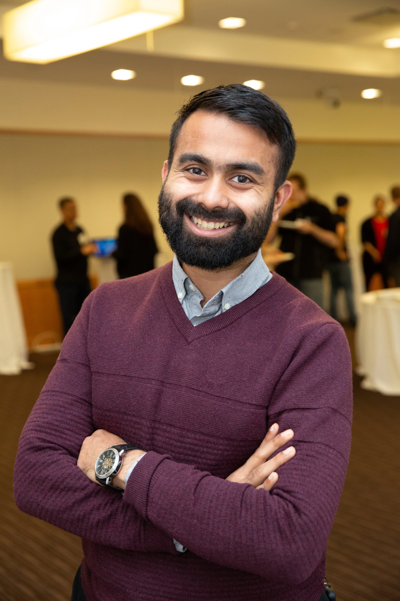
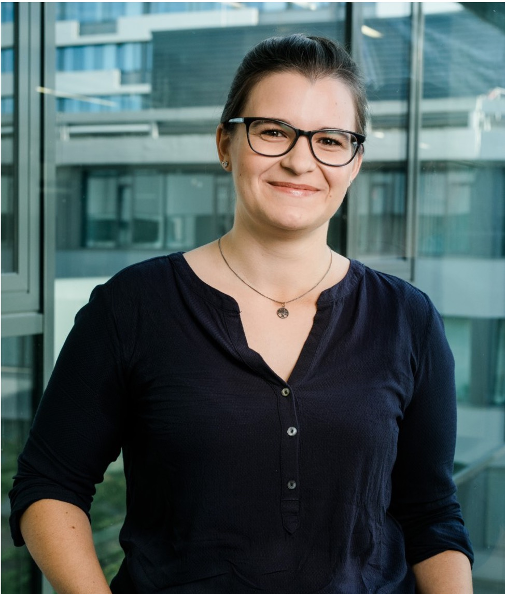

Regular papers
Research papers of up to 6 pages, excluding references and supplementary material.
IEEE SaTML Workshop
AdvML Frontiers aims to form an interdisciplinary community of human-centered researchers within trustworthy AI. Although individual researchers rely on human-centered methods and several published SaTML papers include human-factors components, there is not yet a dedicated community around this work. The workshop welcomes senior researchers and PhD students already working on—or interested in—human factors in trustworthy machine learning, with a low barrier to entry for those who want to learn, participate, and network.
We invite human-centered work on trustworthy machine learning systems, especially interdisciplinary research spanning machine learning, security, safety, HCI, ethics, and the social sciences.
Research papers of up to 6 pages, excluding references and supplementary material.
Up to 4 pages on visionary ideas, long-term challenges, current debates, overlooked questions, or demonstrations.
Non-archival and open to work in progress. Submissions do not need to be anonymized. Concurrent and previously archived work is welcome, and accepted papers will receive either a contributed spotlight or poster presentation.
The submission site will be announced in the near future.
Tenured Faculty Member · CISPA
Dr. Katharina Krombholz is tenured Faculty at CISPA and head of the Usable Security Group, Empirical and Behavioral Security Research Area. Before that, she was senior researcher at SBA Research. She completed her PhD in November 2016 with distinction. She also received a master’s degree in Media Informatics from TU Wien in 2012.
Talk title and abstract to be announced.

Data Cowboy · Microsoft
Ram Shankar Siva Kumar is a Data Cowboy working on the intersection of machine learning and security. At Microsoft, he founded the AI Red Team, bringing together an interdisciplinary group of researchers and engineers to proactively attack AI systems and defend from attacks.
His recent book on attacking AI systems, NOT WITH A BUG has been called “Essential Reading” by Microsoft’s Chief Technology Officer and received wide praise from industry leaders at DeepMind, OpenAI as well as policy makers and academia. He is donating his proceeds of the book royalty to Black In AI.
His work on AI and Security has appeared in industry conferences like RSA, BlackHat, Defcon, BlueHat, DerbyCon, MIRCon, Infiltrate, academic workshops at NeurIPS, ICLR, ICML, IEEE S&P, ACM - CCS. His work has been covered by Bloomberg, VentureBeat, Wired, and Geekwire. He founded the Adversarial ML Threat Matrix, an ATT&CK style framework enumerating threats to machine learning. His work on adversarial machine learning appeared notably in the National Security Commission on Artificial Intelligence (NSCAI) Final report presented to the United States Congress and the President.
He is currently Tech Policy Fellow at UC Berkeley and an affiliate at the Berkman Klein Center for Internet and Society at Harvard University, where he is broadly investigating two questions: How do we assess the safety of ML systems? What are the policy and legal ramifications of AI, in the context of security? He is also Technical Advisory Board Member at the University of Washington.
Talk title and abstract to be announced.
May 3, 2027 · 9 AM–4 PM · Reykjavík, Iceland · Venue forthcoming
15 minutes
45 minutes · Speaker and talk to be announced
Speaker, title, and abstract to be announced.
30 minutes
Paper titles and presentation order will be added after acceptance decisions.
15 minutes
45 minutes · Speaker and talk to be announced
Speaker, title, and abstract to be announced.
30 minutes
Paper titles and presentation order will be added after acceptance decisions.
60 minutes
90 minutes
1:00–1:30 PM
45 minutes · Speaker and talk to be announced
Speaker, title, and abstract to be announced.
45 minutes
Discussion with the keynote speakers and selected workshop organizers. The final panel lineup and topic will be announced with the program.
5 minutes
IBM Research
Independent Researcher
Stanford University
Michigan State University
Arizona State University
UC Santa Barbara

CISPA

University of Pennsylvania
Wayne State University